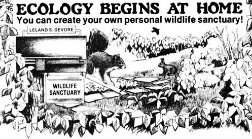

You've finally arrived! Your life's dream has come true. You have your own back yard . . . or woodlot . . . or, maybe, even a "little place out in the country" where you can live just a bit closer to nature and a bit further from the Plastic Society.
Hey! Look at all the wildlife on your property: the birds singing in the trees, the squirrels jumping from branch to branch, the rabbits that live in the fence row, the moles and shrews which tunnel under the sod. Even the wildflowers, shrubs, grasses, and clovers growing on the plot (no matter how small that piece of land may be) take on a new significance when the property is yours.
Wouldn't it be great if you had some way to "work with" the natural flora and fauna on your land . . . to protect and improve it . . . use it to increase other people's awareness of the fragile environment in which we all live . . . to, in effect, create your own wildlife sanctuary.
Well there is a way to do exactly that! Thanks to an idea sponsored by a 45-year-old international non-profit environmental organization headquartered in Wheeling, West Virginia . . . almost anyone, anywhere, can register almost any piece of property, of almost any size, as a personal wildlife sanctuary. The program-which is only a little over four years old-is already being used to protect more than 16,000 acres in ten states. (The smallest sanctuary is a 30 X 100-foot lot in New York City, and the largest encompasses 2,200 acres in Virginia.) How can you get in on this Good Thing too? And what will the program do for you and your piece of land?
Easy! All you have to do to become part of this program is sign a pledge stating that you will manage your land-no matter how big or how small the property might be-in a manner that protects and improves its natural flora and fauna. That's it. And I hasten to add that the signing of this statement in no way compromises your ownership or personal rights to your land. All-I repeat- all it does is put you on record as being a concerned property owner who is dedicated to the preservation of your land's native flora and fauna.
This simple act registers your property with the sponsoring organization and entitles you to assistance with any environmental problems or questions you may have. (Typical queries that the sponsoring organization has answered: How can I improve my land's habitat for squirrels and rabbits? What trees should we plant to provide food and shelter for birds?)
In addition, for $1.00 each (the only expense you'll incur in the whole program), you'll be furnished with as many attractive metal signs (stating that your property is a registered wildlife sanctuary) as you want.
What you won't receive is a dun for registration fees, hidden costs of any kind, reports to fill out, legal commitments of any nature, or an obligation to do anything. This is an entirely voluntary, do-it-yourself environmental program. You're completely free to oversee and manage your personal sanctuary in the way you think best. And if, for any reason, you ever decide you want out of the whole shebang . . . no problem. Simply take down your signs. It's that easy.
I've had my small acreage registered for a little over three years now, and I've enjoyed every minute of it. During that time I've improved the habitat for small mammals on the place by establishing a couple of big brush piles and planting native food plants. I've also improved the property for me (and me for it!) by cultivating native wildflowers and becoming far more aware of the wildlife around me.
And don't underestimate the importance of those "wildlife sanctuary" signs I've posted along my land's borders. As simple, straightforward, and obvious as they may seem to be . . . they work! On the one hand, they've materially reduced the trespassing that "no hunting" and "no trespassing" signs seemed unable to stop. And on the other, they've attracted interested (and interesting!) people who've looked me up to learn more about "what's going on" (I've become something of a local wildlife "expert" to these last folks, thanks to the bird identification information which I've received from the organization that sponsors sanctuaries like mine.)
In short, I think this whole grand idea is a lot of fun and very worthwhile. It has given me a good, warm, solid feeling to know that I'm actually doing something constructive to preserve the natural environment . . . instead of just sitting around, wringing my hands, and hoping that things will get better. I also enjoy knowing that my little piece of land is part of something much bigger (over 16,000 acres now!) which is devoted to reversing the degradation of our beautiful planet.
If you'd like to help this worthy program expand and flourish by signing up your property as a wildlife sanctuary, write to the Brooks Bird Club, 707 Warwood Ave., Wheeling, W.Va. 26003. The folks there will send you a packet of information which explains the program in more detail. And do write today! And then do join! And then do spread the word to others! I think we're onto something here.
|
 |
|
|